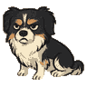

DEXTERDESK FAMILIAR / 001
Your attendance has been recorded. Unfortunately.

PRESENT · UNIMPRESSEDNO ACCOUNT · NO TELEMETRY
LOCAL INPUT LAB
Type. Be judged.
Dexter reacts to keypress timing here only. Text is never saved or transmitted. Close the panel to erase it.
0 keys / 6 seconds